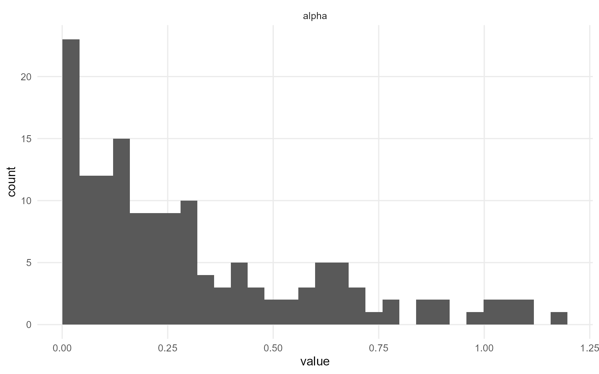
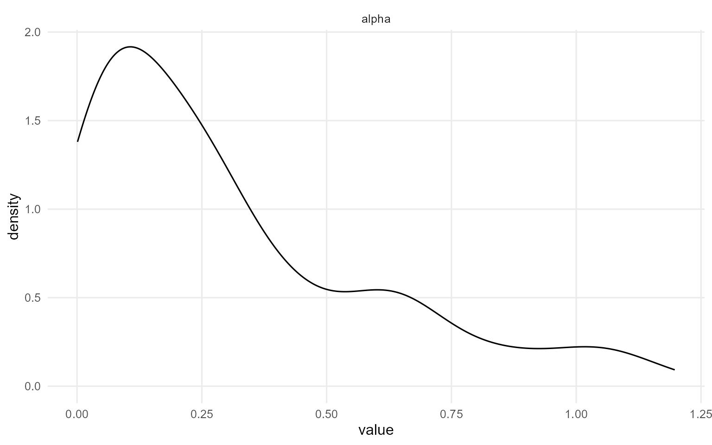
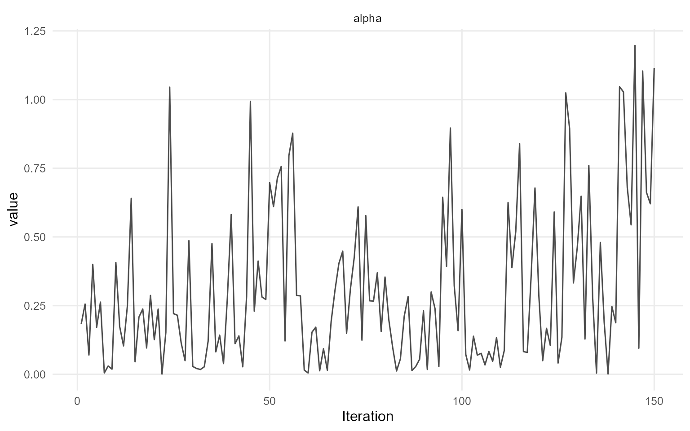
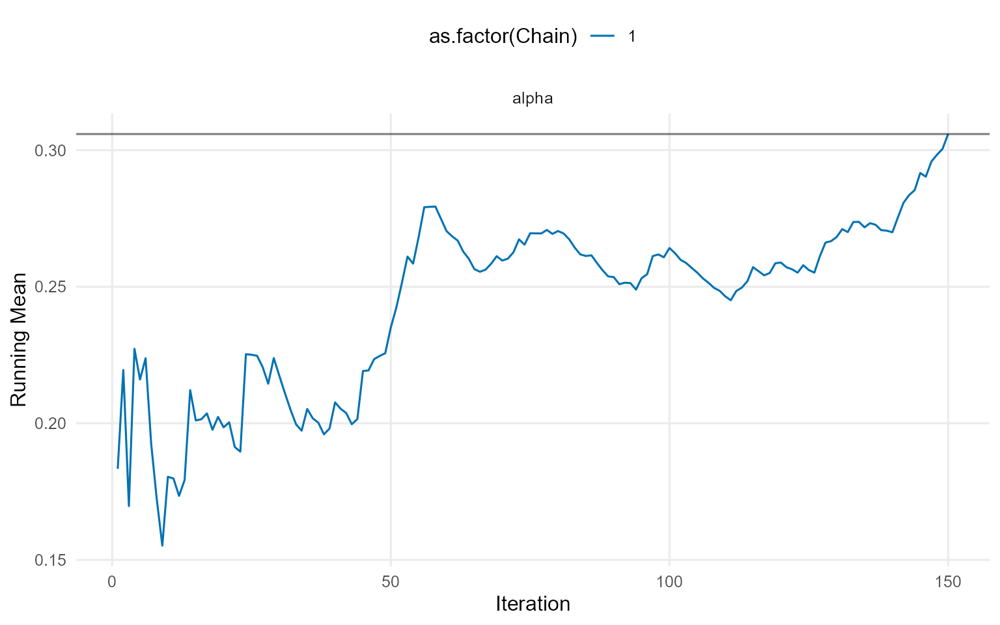
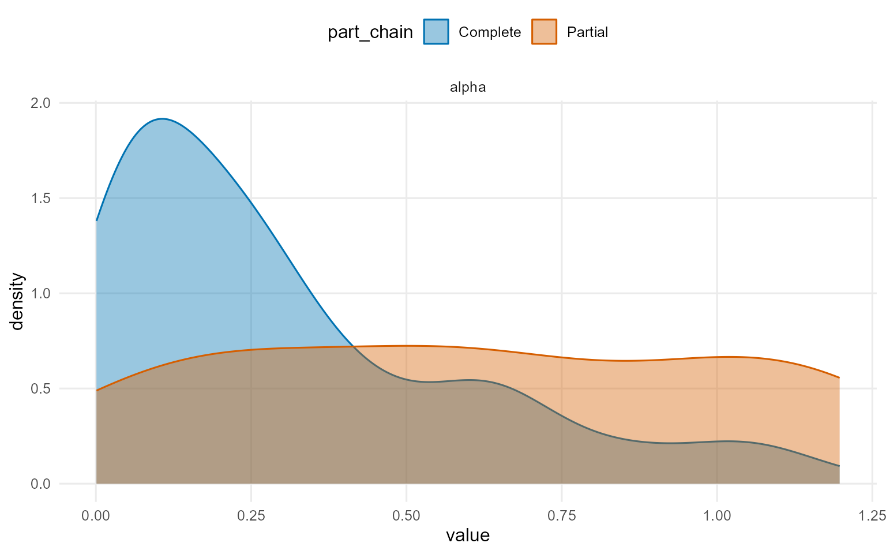
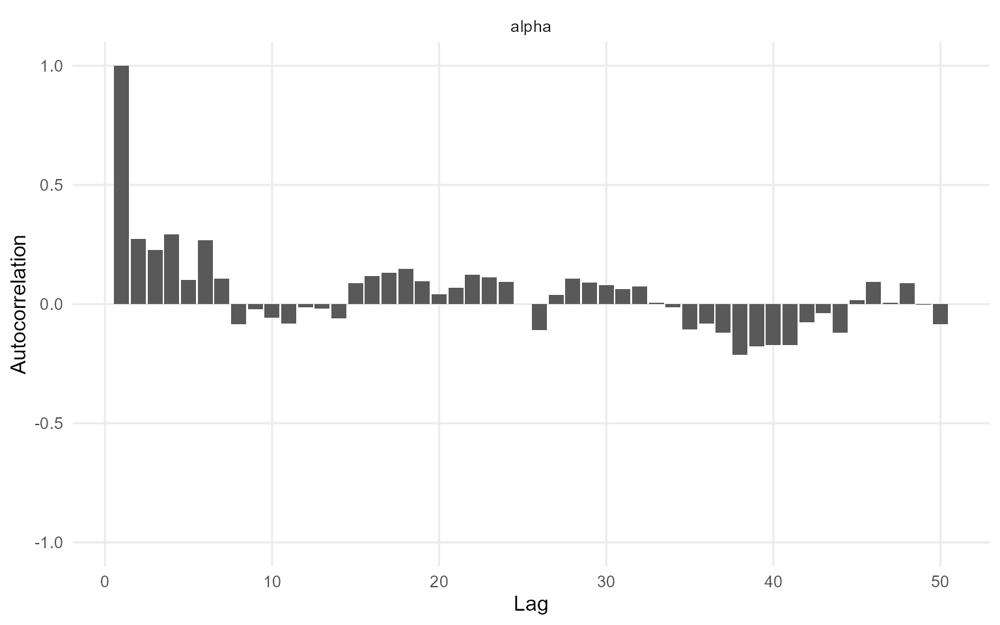
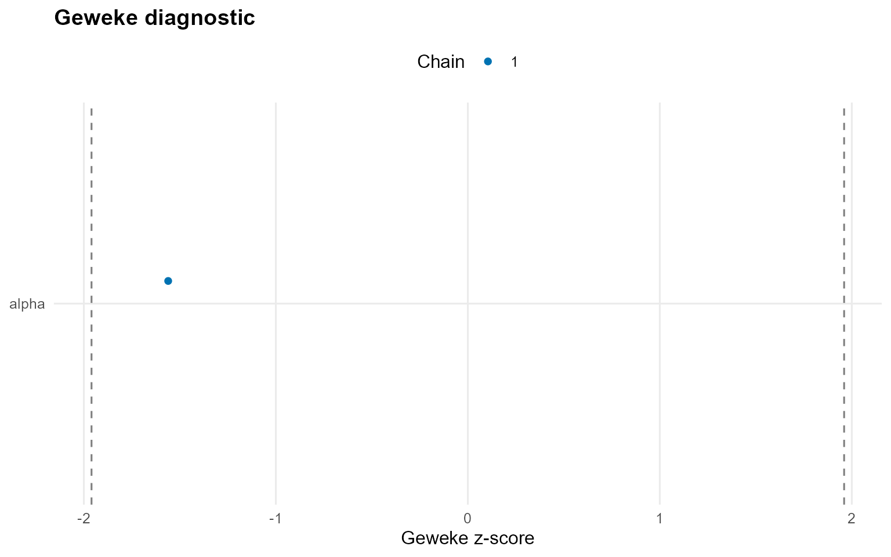
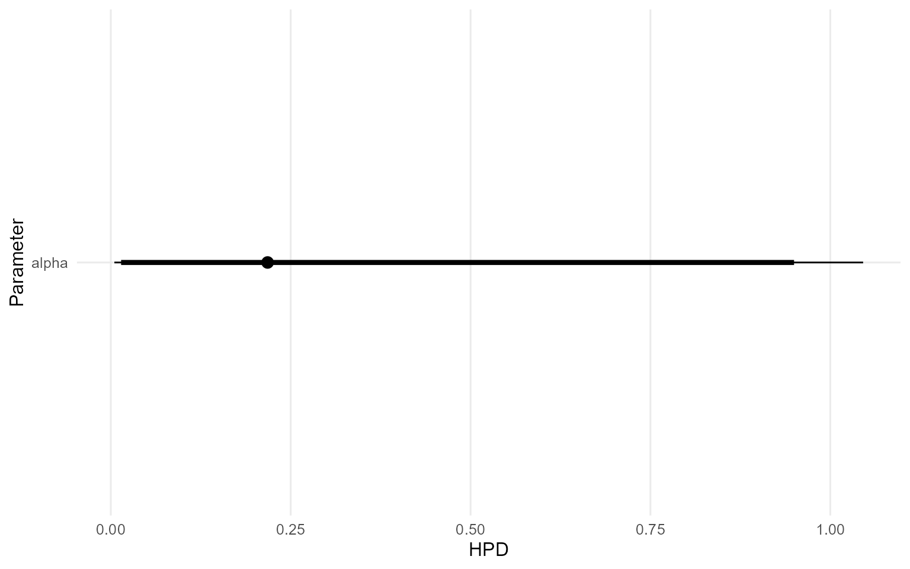
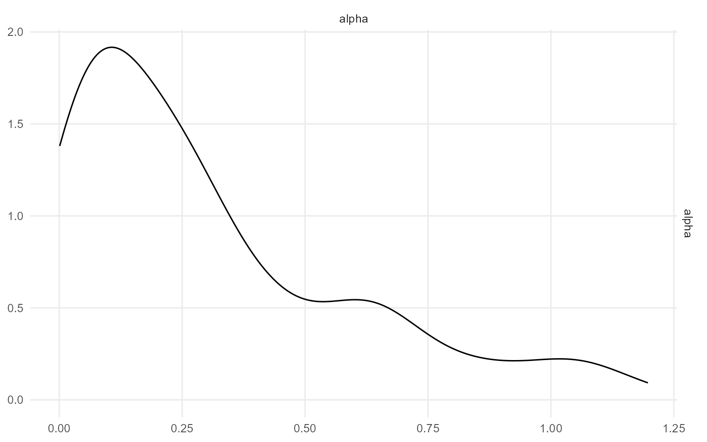

Workflow 4: Backends, Kernels, and Workflow Map
Source:vignettes/workflows/v04-backends-and-workflow.Rmd
v04-backends-and-workflow.RmdTheory (brief)
The CRP and stick-breaking backends are two equivalent representations of the DP mixture. They differ in computation (allocation vs truncation) but target the same underlying prior over distributions.
Big picture
DPmixGPD has two orthogonal dials you turn when building models:
-
Backend (how the mixture weights / clustering are
represented)
- CRP: Chinese Restaurant Process representation.
- SB: stick-breaking truncation with a fixed number of components.
-
Kernel / family (what distribution models the bulk
of the data)
- Examples: normal, lognormal, gamma, inverse-Gaussian, Laplace, Cauchy, Amoroso, etc.
Optionally, you can also turn on:
- GPD = TRUE/FALSE to splice a Generalized Pareto tail beyond a threshold.
What changes between CRP and SB?
Both backends target the same posterior over densities. The difference is representation:
-
CRP learns a random number of occupied clusters
within a finite
componentscap. -
SB uses the same finite
componentscap and learns stick-breaking weights.
Practical rule of thumb:
-
CRP is convenient when you want adaptive complexity
while still using a finite
componentscap. - SB is convenient when you want predictable memory/time and easy vectorization.
What does the workflow look like?
DPmixGPD uses a consistent build -> run -> summarize loop:
-
Build a bundle using
build_nimble_bundle()(or causal builders if you are doing TE work). -
Run MCMC using
run_mcmc_bundle_manual(). -
Inspect and summarize using
print(),summary(),plot(). -
Predict using
predict()(and optionallyfitted()).
# Build
bundle <- build_nimble_bundle(
y = rnorm(50),
backend = "crp",
kernel = "normal",
GPD = FALSE,
components = 5,
mcmc = mcmc
)
# Run
fit <- load_or_fit("v04-backends-and-workflow-fit", run_mcmc_bundle_manual(bundle))===== Monitors =====
thin = 1: alpha, mean, sd, z
===== Samplers =====
CRP_concentration sampler (1)
- alpha
CRP_cluster_wrapper sampler (10)
- sd[] (5 elements)
- mean[] (5 elements)
CRP sampler (1)
- z[1:50] [Warning] CRP_sampler: This MCMC is not for a proper model. The MCMC attempted to use more components than the number of cluster parameters. Please increase the number of cluster parameters.
# Summarize
print(fit)MixGPD fit | backend: Chinese Restaurant Process | kernel: Normal Distribution | GPD tail: FALSE
n = 50 | components = 5 | epsilon = 0.025
MCMC: niter=400, nburnin=100, thin=2, nchains=1
Fit
Use summary() for posterior summaries; plot() for diagnostics; predict() for predictions.
summary(fit)MixGPD summary | backend: Chinese Restaurant Process | kernel: Normal Distribution | GPD tail: FALSE | epsilon: 0.025
n = 50 | components = 5
Summary
Initial components: 5 | Components after truncation: 1
WAIC: 126.441
lppd: -57.216 | pWAIC: 6.004
Summary table
<table class="table" style="width: auto !important; margin-left: auto; margin-right: auto;">
<thead>
<tr>
<th style="text-align:center;"> parameter </th>
<th style="text-align:center;"> mean </th>
<th style="text-align:center;"> sd </th>
<th style="text-align:center;"> q0.025 </th>
<th style="text-align:center;"> q0.500 </th>
<th style="text-align:center;"> q0.975 </th>
<th style="text-align:center;"> ess </th>
</tr>
</thead>
<tbody>
<tr>
<td style="text-align:center;"> weights[1] </td>
<td style="text-align:center;"> 0.962 </td>
<td style="text-align:center;"> 0.08 </td>
<td style="text-align:center;"> 0.735 </td>
<td style="text-align:center;"> 1 </td>
<td style="text-align:center;"> 1 </td>
<td style="text-align:center;"> 23.073 </td>
</tr>
<tr>
<td style="text-align:center;"> alpha </td>
<td style="text-align:center;"> 0.306 </td>
<td style="text-align:center;"> 0.291 </td>
<td style="text-align:center;"> 0.005 </td>
<td style="text-align:center;"> 0.218 </td>
<td style="text-align:center;"> 1.046 </td>
<td style="text-align:center;"> 46.898 </td>
</tr>
<tr>
<td style="text-align:center;"> mean[1] </td>
<td style="text-align:center;"> 0.128 </td>
<td style="text-align:center;"> 0.133 </td>
<td style="text-align:center;"> -0.104 </td>
<td style="text-align:center;"> 0.112 </td>
<td style="text-align:center;"> 0.404 </td>
<td style="text-align:center;"> 150 </td>
</tr>
<tr>
<td style="text-align:center;"> sd[1] </td>
<td style="text-align:center;"> 1.539 </td>
<td style="text-align:center;"> 0.422 </td>
<td style="text-align:center;"> 0.967 </td>
<td style="text-align:center;"> 1.483 </td>
<td style="text-align:center;"> 2.602 </td>
<td style="text-align:center;"> 80.825 </td>
</tr>
</tbody>
</table>
plot(fit)
=== histogram ===
=== density ===
=== traceplot ===
=== running ===
=== compare_partial ===
=== autocorrelation ===
=== geweke ===
=== caterpillar ===
=== pairs ===
Kernel support quick check
Use kernel_support_table() and the kernel registry
helpers to confirm what is available.
kernel gpd covariates sb crp
normal normal ✔ ✔ ✔ ✔
lognormal lognormal ✔ ✔ ✔ ✔
invgauss invgauss ✔ ✔ ✔ ✔
gamma gamma ✔ ✔ ✔ ✔
laplace laplace ✔ ✔ ✔ ✔
amoroso amoroso ✔ ✔ ✔ ✔
cauchy cauchy ❌ ✔ ✔ ✔